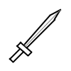
ファイン・ソード
コモン武器 - 剣
標準的な剣。一般的な冒険者にとっては安心して使える。
物理攻撃力 4～7

標準的な剣。一般的な冒険者にとっては安心して使える。
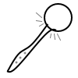
標準的な杖。一般的な冒険者にとっては安心して使える。
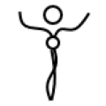
赤色のペンダント。僅かな【力】を感じ取る事が出来る。
上部が丸みを帯びている盾。重さが軽量化されているが防御力は一般品よりも高い。
高貴なる青の帽子は魔法使いの力の源でもある。【氷】属性からの魔法ダメージを軽減し、かつ、【氷】属性による魔法ダメージを増強する。
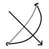
物理攻撃がヒットした時、20%の確率で対象に【鈍化】のBUFFを付与する。
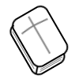
一人前になった冒険者が良く持ち歩く本。本書の読み解きを経て詠唱すれば自ずと威力は上がる。
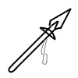
伝統的な両手槍。威力、使いやすさと共に申し分はない。
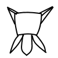
暑苦しいが硬さを保証してくれる鉄製の鎧。
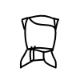
重さを全く感じさせない稲妻紋様が入った舞踏衣。攻守を兼ね備えた防護服として仕上がっている。
闇の残影を宿しているマジックライト。僅かに闇のイメージが入り込んでくる。
馬の刻印が施された銅の腕輪。力＋５、体＋５
カラフルな色で構成されたコンパス。暗い中でもこれがあれば安心できる上、色彩が活力を与えてくれる。
とある王国が栄えた時代、このサークレットを装着していた者が安定した支配で世界を治めていたと言われている。
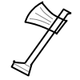
力強く振り回した時、それに呼応する形で威力の出る斧。つかうためには少々の訓練が必要。
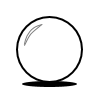
一点集中する事のために作られた水晶。安定感ある威力のため、一定の層から人気がある。
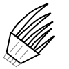
重量をほぼ感じさせないため、装着者は自由に荒れ狂う拳を振る舞う事ができる爪。【特殊効果】物理攻撃が対象にヒットする度に、30%の確率で対象に【スリップ】のBUFFを付与する。
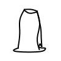
悠久都市セラーナにて限定的に販売された衣。輝かしい光を放つ衣からは威厳を感じ取れる。
既に枯れてしまっているにも関わらず、古代栄樹の底知れぬ魔力を宿す。保持するだけで直接脳内へ魔力の根源が伝わってくる。
正しき秩序と整合性はこのゲイル・ウィンドから生じる事象。その痕跡だけではあるが、直接原理の意志が流れ込んでくる。
過去から現在、そして未来永劫決して輝きを失わないクリスタル。その欠片のみではあるが、所持者に直接的な反射能力を向上させる力が宿っている。
現世には決して存在しない存在、エバー・マインド。その存在の残思は潜在意識へと直接コンタクトしてくる。既に朽ちてはいるが、そでもなお一定の効果は発揮される。
青銅素材で作られた腕輪。牙の刻印がしてある。
青銅素材で作られた腕輪。飛の刻印がしてある。
紫を宿らせている刻印、それは【知】を示す。
常に放電し続けるが、可視化されていないイアリング。存在自体はしてお発光された箇所から次々と活力が湧いてくる。
この聖杯の中には眼には見えないが人の心が埋め込まれていると謳われる。装着者には得たいの知れない源泉のパワーが溢れてくる。
失われた王国ヴィルジランテが栄華を誇った時代に作られた伝説の槍。槍の切っ先には黒い空間が宿っている。その形状は神々しくもあり、禍々しくもある。槍の効果は凄まじく、対象者はたちまち絶命の危機に瀕するだろう。【特殊効果】自分から物理攻撃を伴う行動を行った場合、クリティカルの発生率が５％上昇する。物理攻撃がクリティカルでヒットした場合、クリティカルダメージ量が５％上昇する。
品質が高く、洗練された杖。更なる強さを求める一部の者がこれを使用する。
鋼鉄の中でも特に密度の高い素材で作られた鎧。分厚さと頑丈さを兼ね備えており、硬い防御力を誇る。装飾もごつごつした印象であり、対象者からはデカい壁の様に見えると言われている。
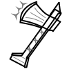
ゼールマンの里から伝承された両手斧。重量が非常にあり、一般的な鍛え方をしている人では両手でもまともに持ち上げられない。攻撃が当たれば破壊力は絶大である。
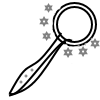
悪を滅するために業火の炎で鍛えられた大型の杖。形状は非常にごつごつしており、杖の先端は常に炎が宿っている。炎同士の対決を意識する者は、炎の激突に打ち克つためにこの杖を保持する。
鋼の素材で作られた腕輪。『ディープ』の印字が刻まれている。知＋４５、体＋３０
凛と光る青い魔石からは自然に湧き出るような【技】を感じる。
聖と光の刻印がクロスした形状で出来上がった石。多大な魔力が込められており、それ自体で自律的に宙に浮く。これを保持する者は永続的な恩恵と断続的な魔力が身体に流れ込んでくるのを感じ取る事が出来る。
死を迎え入れるヴァルキリーの紋章。装備者にヴァルキリーの信念が宿る。
古代賢者ジュザは逸脱した戦闘能力を更に進化させ、スピード／威力／インパクトを全て兼ね備える技の極みを常に求めていた。その到達地点としての一つの解は「爪装備」であると彼は断言している。
高品質の素材と熟練の技で鍛えられた剣はマスターの称号が与えられる。
高品質の素材と熟練の技で鍛えられた本はマスターの称号が与えられる。
高品質の素材と熟練の技で鍛えられた弓はマスターの称号が与えられる。
熱く、強靭であり、豪快な紋様が描かれれている斧。その振る舞いは常に炎が周囲を纏うかの様に行われる。斧自体が圧力を放っており、その斧を持った物が戦闘モーションに入るだけで周囲敵を威圧する。【特殊効果】戦闘開始時、味方フィールドに【ドミネーション・フィールド】のBUFFが付与される。
圧縮化されたガラス素材を更に色相変化させ、高純度の別の結晶へと変化を遂げた素材を用いた水晶。魔導士がこれを振る舞う時は、相当高い熱量を発生させて魔法を繰り出す。【特殊効果】魔法攻撃がクリティカルでヒットした場合、クリティカルダメージ量が１０％上昇する。
希少価値の高いドラゴンの鱗を素材にして製作された鎧。頑丈さはもちろんだが、魔法耐性の効果もあるため、前衛で闘う戦士にとっては無くてはならない装備品である。【特殊効果】魔法ダメージを受ける時、３０％の確率で受けるダメージ量を半分にする。
一見すると颯爽とした普通のドレスに見えるが、キメ細かい装飾が施されておりその様は白い光を纏う中に一筋の黒い闇の紋様が埋め込まれているのが理解できる。【特殊効果】物理ダメージを受ける時、３０％の確率で受けるダメージ量を半分にし、加えて、攻撃を行った対象者に受けたダメージ量の分だけ反射して無属性の魔法ダメージを与える。
銀の素材で作られた腕輪。『雷鳴』のオーラが漂っている。
淡く照らす赤の輝石が身体の周りで浮遊する。
雪原の大樹【ラタ】の紋様が施されたリング。装備した者に不思議な青白の発光が与えられ、加護が約束される。
電撃の羽が付与されているブーツ。その印は俊足を象徴しており、装着したものは瞬間力のある切り返し行動をものともせず実行できるようになる。
煉獄を制御する炎授天使が炎柱を一つの護符に収められている。この護符の中では渦巻く業火の炎が激しく燃え盛り続けている。
天使との契約を果たす事で絶対的な恩恵を授かる事が出来る。その影響により保持者にはほんの少し光のオーラが宿り、一定レベルの魔物が発する様々な効果を対象者は受け付けなくなる。
古代賢者シェズルが幼少時代に付けていた神秘的な奇麗さを放つ衣。シェズルは魔法に関しては一線を画しており、その能力／才覚／カリスマ性には誰もが惹かれたと言われている。
水晶の奥を深くのぞき込む事で、対象の地点へワープする事が出来る。ダンジョン内から町へ帰還する際に用いる。